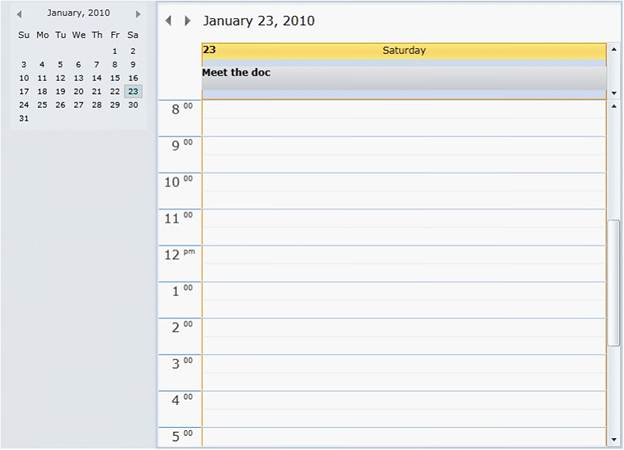
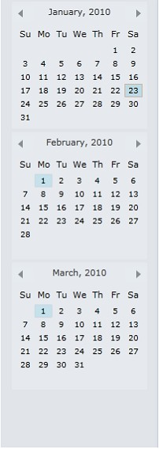
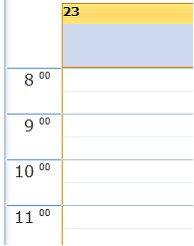
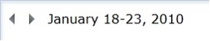

The Schedule Control exposes the following public properties in the top level.
Option features
· CalendarVisibility—Sets the visibility of the Calendar view in the left-side of the Schedule.

Figure 5: calendar Visibility
· CalendarItemsCount—Sets the number of calendar items for visibility. Default value is 1.

Figure 6: Calendar Items
· ScheduleType—Sets different view modes for Schedule,
o Day
o Week
o WorkWeek
o Month
· StartWorkHour—Set the start work hour for Schedule. Default value is 8.

Figure 7: Start Work Hour
· EndWorkHour—Set the end work hour for Schedule. Default value is 17 (or 5 PM).
· TimeInterval—Set the TimeInterval for each time slot in appointments. The following options available are:
o FiveMin
o SixMin
o TenMin
o FifteenMin
o TwentyMin
o ThirtyMin
o OneHour
· TitleBarVisibility—Gets / Sets the TitleBar visibility
,

Figure 8:TitleBarVisibility
· IsAmPmMode—Sets the AM/PM Mode in the Time slots.
· IntervalHeight—Sets the height of each interval in the Time slot. Default value is 24.
· AllowEdit—Specifies this property to allow editing the appointments in Schedule. Default value is true.
· AllowAddNew—Specifies this property to allow adding new appointments. Default value is true.
· AllowDelete—Specifies this property to allow deleting appointments in the appointment editor. Default value is true.
 Adding Appointment
Adding Appointment